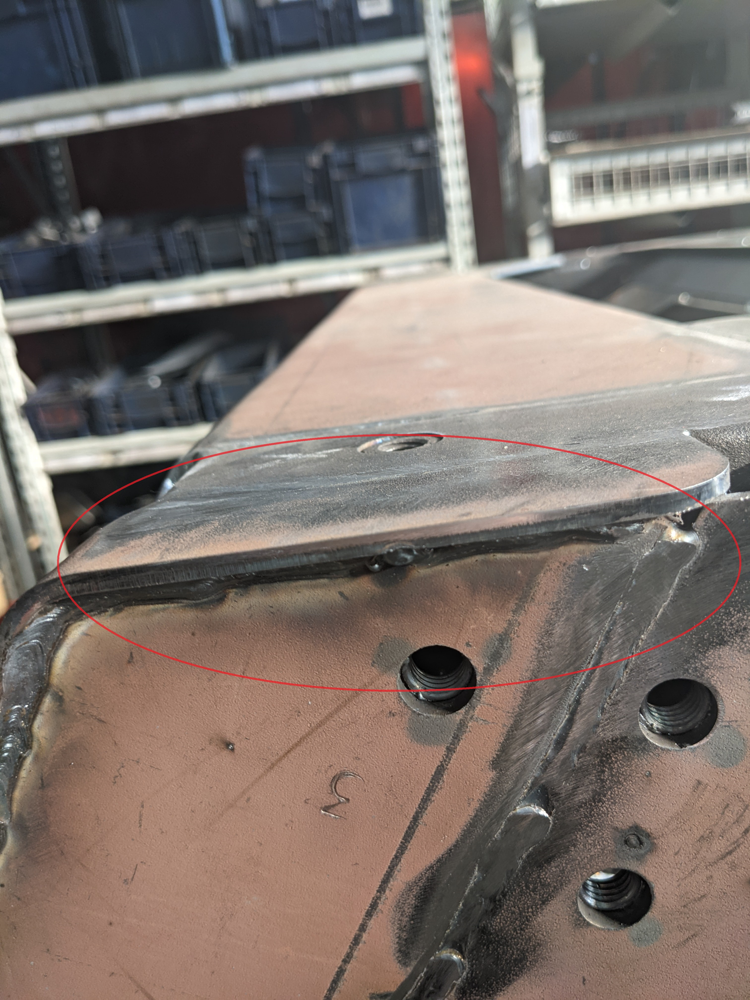
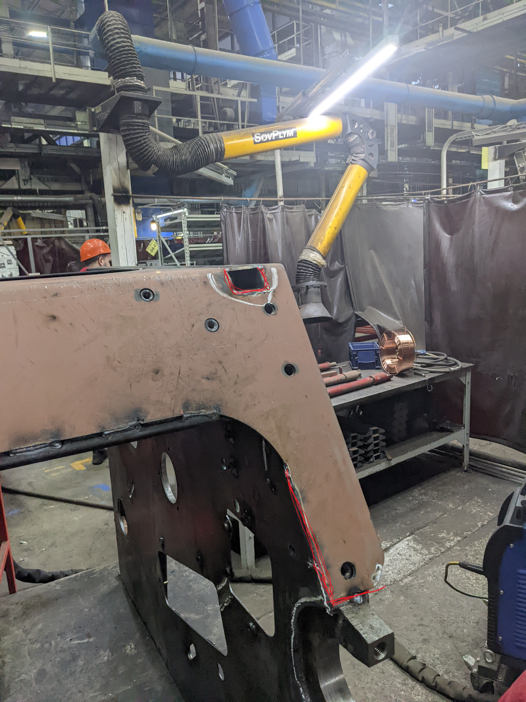

Сборка
- Ставим панели, что бы сели на штыри
- Ставим отсекатель посередине
- Ставим заднюю растяжку(Важно! Зажатой максимально)
- Поджимаем панели
- Ставим кожух
- Выравниваем кожух так, что бы был максимально равен к трубе панели(лио забить кожух, либо приподнять(без фанатизма!) панель
- Вешаем подковы(короткая не прилегает к верхней трубе панели, а длинная почти впритык к трубе)
- Полностью зажимаем панели
- Ставим передню распорку
Сварка переда
- Прихватки на подковах(ВАЖНО!) и на кожухе первоначально подогнув его, чтоб вровень с трубой панели и шов возле бугеля

